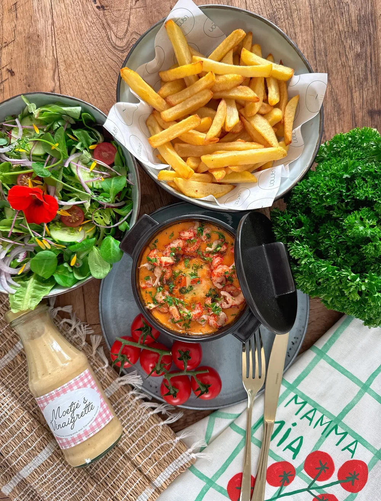
BestsellerScampi cocotte
Gebakken scampi's in een romig sausje, klaar om te gratineren, met rivierkreeftjes, verse frietjes, een fris slaatje en onze 'moetjes' vinaigrette.
€ 18,75per persoon, vanaf 2
48 uur vooraf
48 uur vooraf
Wij zijn een vrolijke bende koks en bourgondiërs. Elke dag maken we in huis bereide gerechten, broodjes, salades en planken klaar. Jij komt ze halen, of we zetten je feest volledig in elkaar.
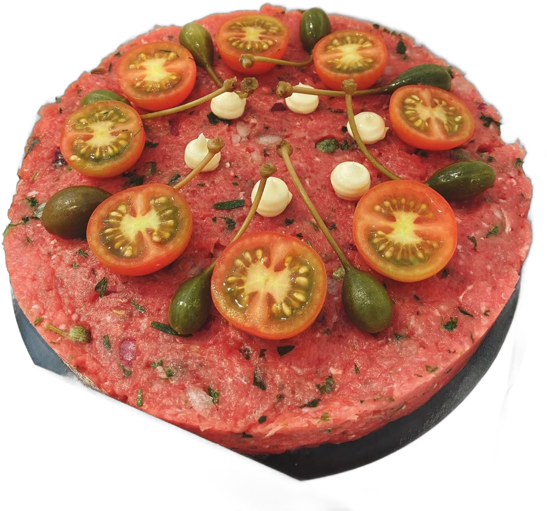
Een volledig pakket, klaar om op tafel te zetten. Bestel op tijd en haal het op aan de Grote Markt.

BestsellerGebakken scampi's in een romig sausje, klaar om te gratineren, met rivierkreeftjes, verse frietjes, een fris slaatje en onze 'moetjes' vinaigrette.
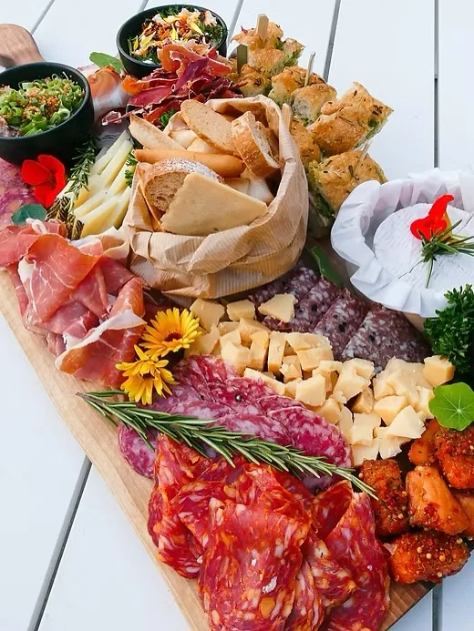
4 tot 6 personenZestien favorieten op één plank: truffelsalami, Duroc-ham, Manchego, warmgerookte zalm, hummus met granaatappel en meer. Geen vulling met druiven.
Geen pannetjes, maar de échte Zwitserse raclette waar de kaas van het wiel loopt.
Ook te bestellen: Taco night at home, de Butcherplank met Dierendonck en The Butcher's Store, en onze Breughelplanken.
Klassiekers van het seizoen naast nieuwe ideeën van de koks. Volg ons op Instagram om te zien wat er vandaag klaarligt.
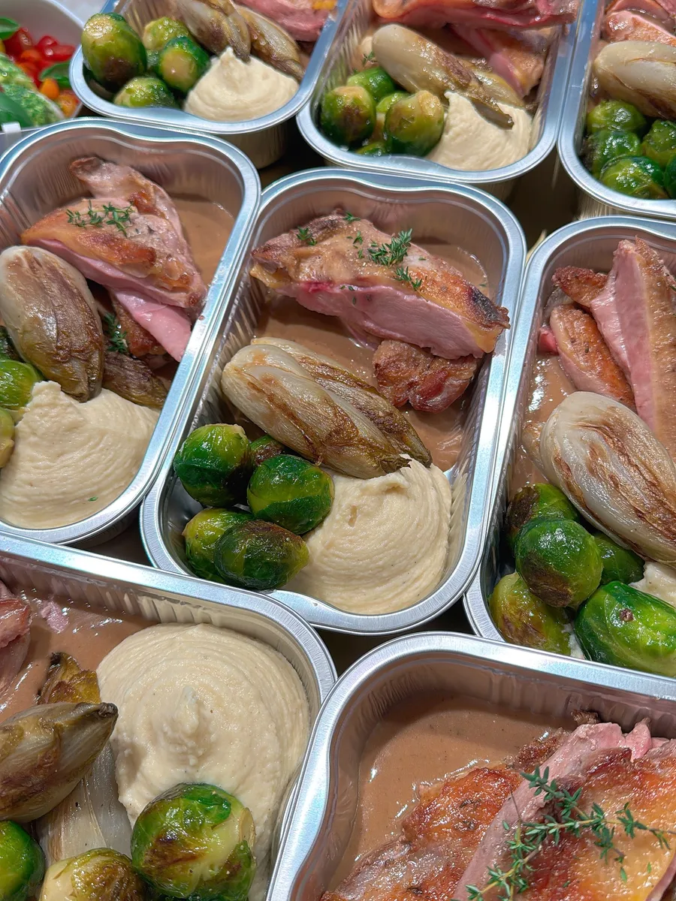
Wild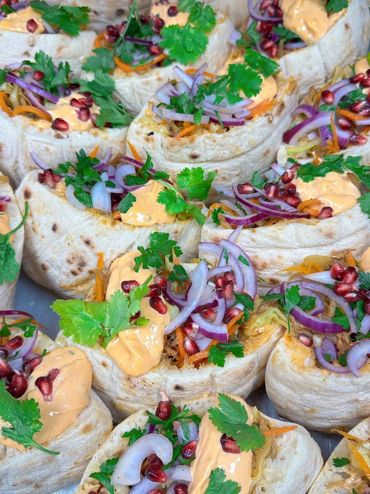
Lunch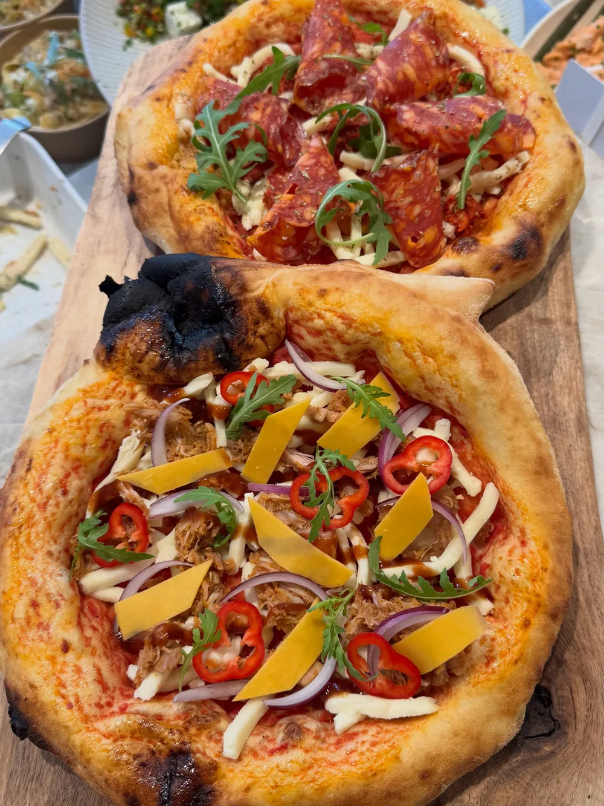
Vanaf donderdag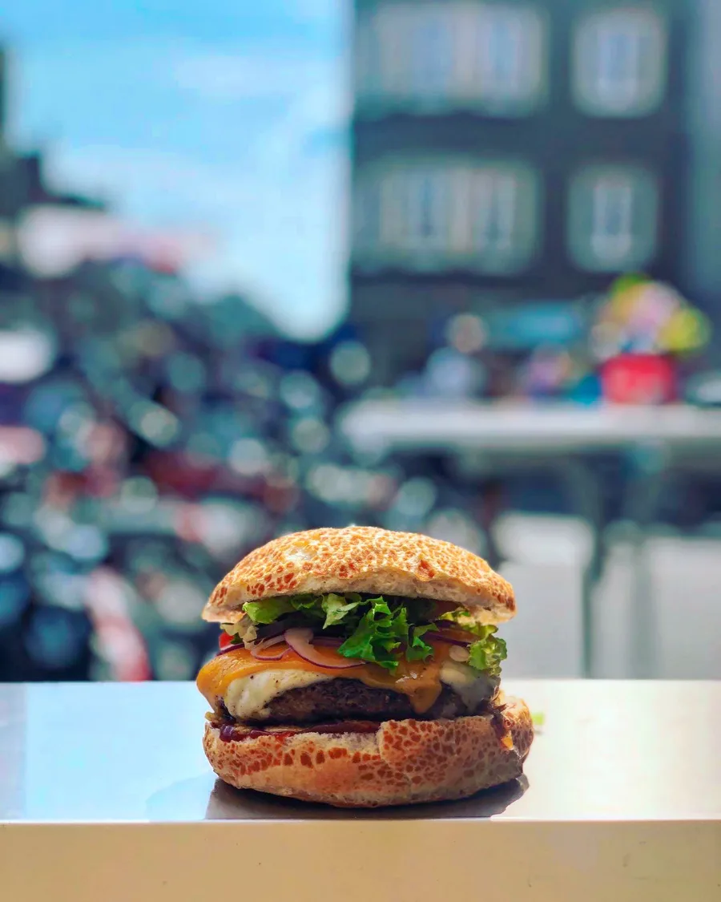
Van de grill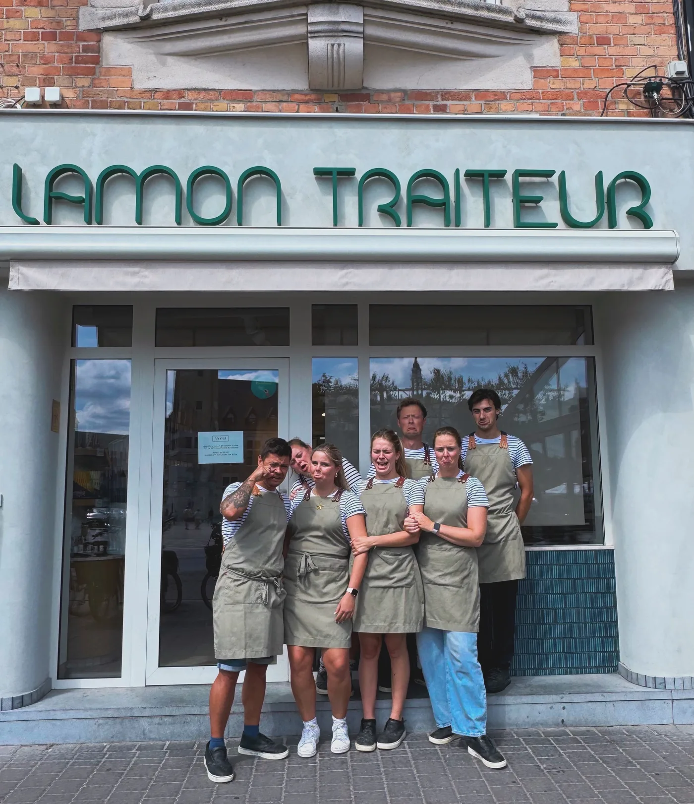
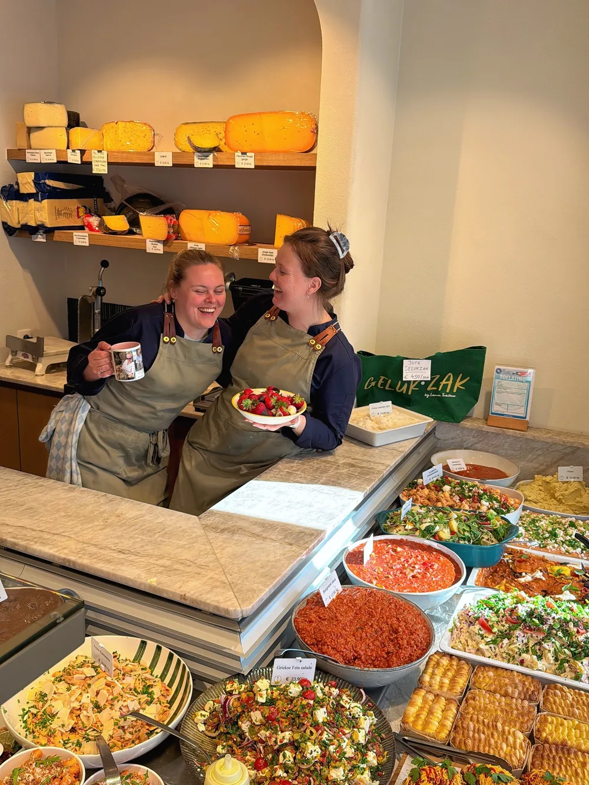
In Roeselare is Lamon al sinds 1874 een vaste waarde, eerst als slagerij. Sinds 2015 draait alles rond koken en genieten.
Onze gediplomeerde koks maken alles in huis, volgens de Franse, Italiaanse en wereldkeuken. En of het nu een zakenlunch, een lentefeest of een BBQ is: we zorgen dat de mondjes openvallen en de broeksriemen gelost worden.
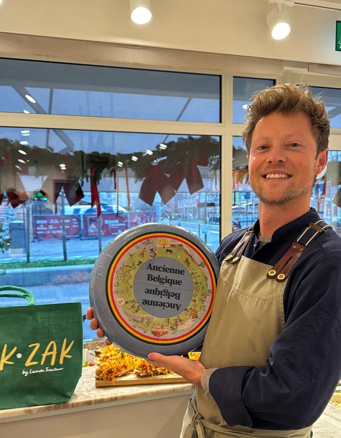
★★★★★"Ik hoop dat jullie even veel volk over de vloer krijgen als La Mona Lisa in het Louvre."
★★★★★"Op zoek naar een restaurant stonden we opeens voor een etalage met heerlijke gerechten. Zou graag deze winkel bij ons in Nederland in de stad vinden."
★★★★★"De belegde focaccia's van Lamon zijn finger licking good!! Perfecte lunch to go!"
★★★★★"Top producten, de smaken zaten goed. Ik ben zelf chef, moet zeggen petje af."
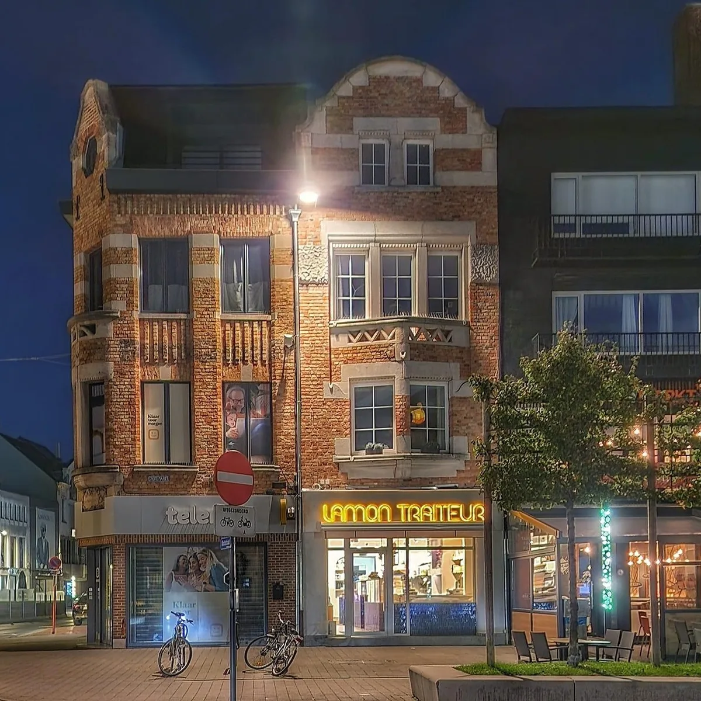
Grote Markt 18Je vindt ons midden in Roeselare, op de Grote Markt. Kom gerust binnen om te kijken wat er vandaag in de toonbank ligt.
Ik maakte deze demo voor jullie om te tonen wat er kan. Na een kort gesprek maak ik er iets veel persoonlijkers van, helemaal naar jullie wens.
Vrijblijvend. Ik kom langs of we bellen.
Op maat, op jullie eigen domein.
Geen voorschot. Jullie betalen pas als alles klaar is.
Hosting, domeinnaam en kleine wijzigingen, zoals nieuwe openingsuren.
Omdat een voorbeeld meer zegt dan een mail. Zo zien jullie meteen wat er kan, en het kost jullie niets.
Nee. Het gesprek is vrijblijvend. Vinden jullie het niks, dan is het daarmee gedaan.
Na ons gesprek staat jullie site binnen 10 tot 14 dagen online.
Zeker. Jullie domeinnaam kan gewoon blijven, de nieuwe site komt in de plaats van de oude.
Nee, dat doe ik op basis van ons gesprek. Eigen foto's zijn mooi meegenomen, maar niet nodig om te starten.